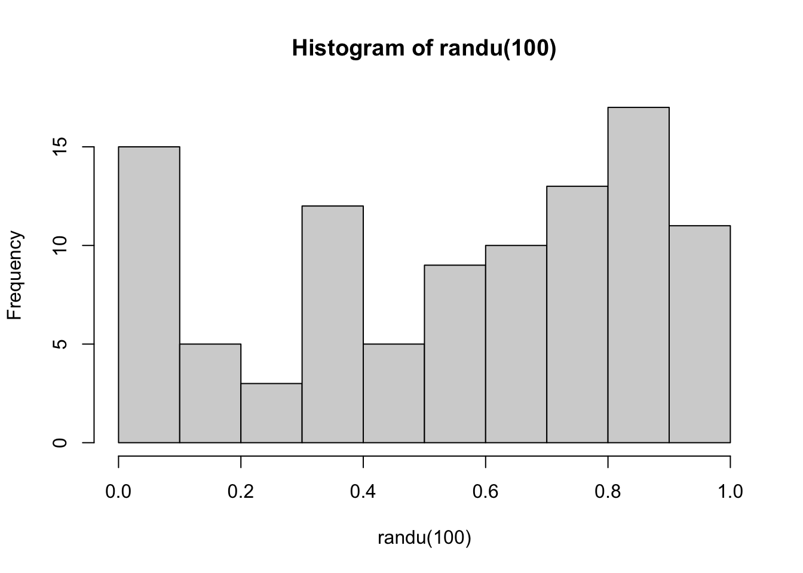
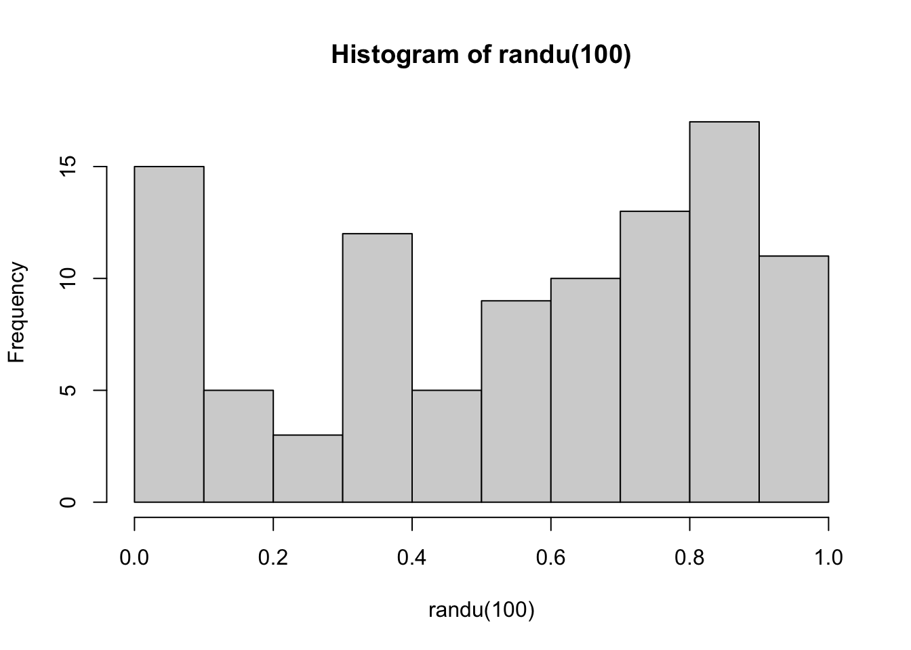
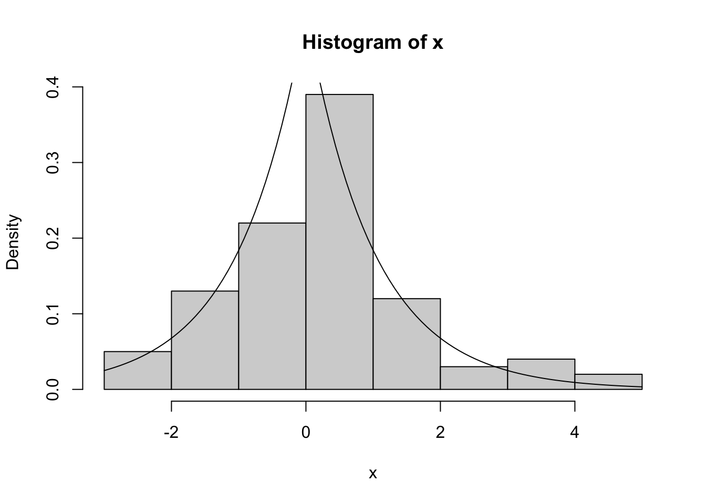
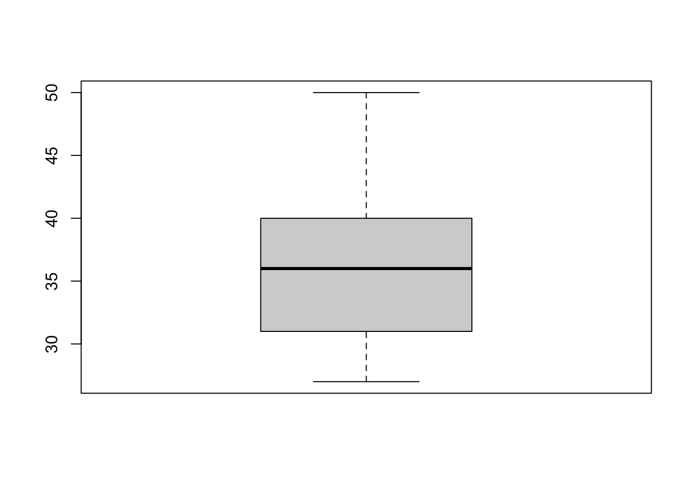
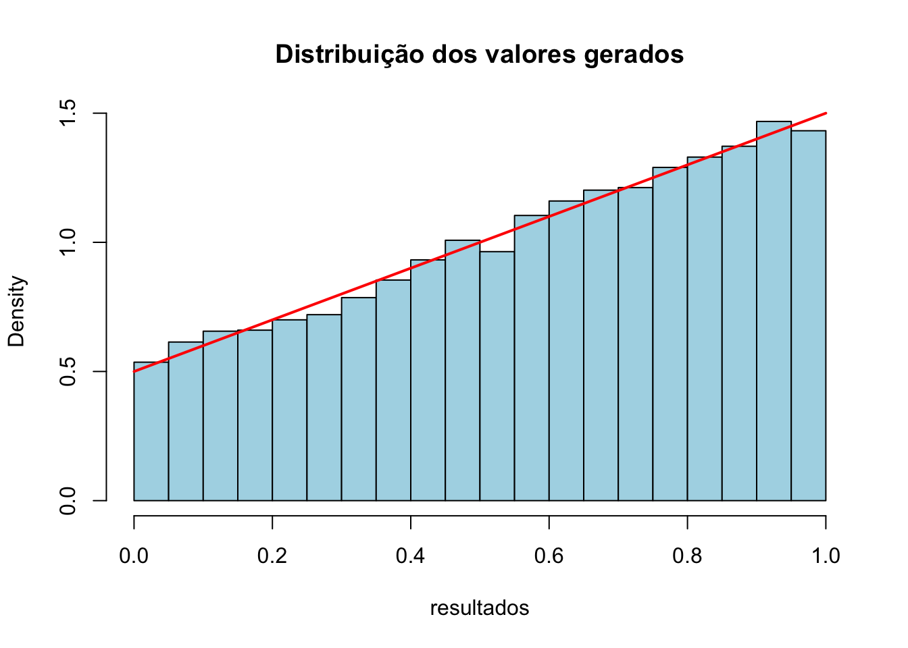
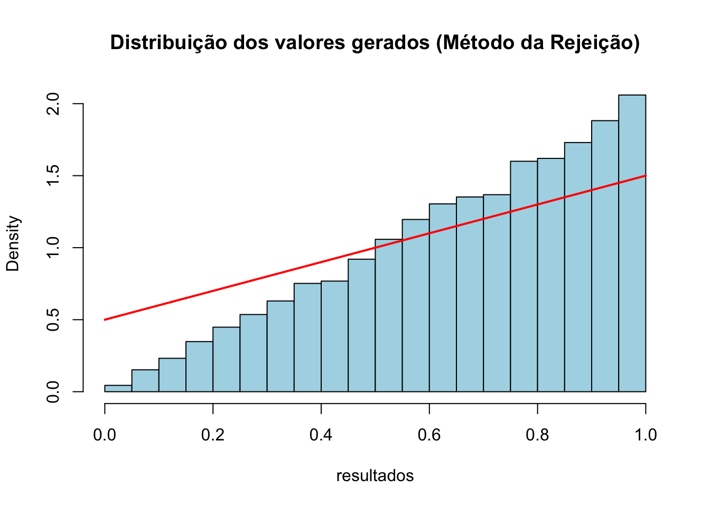
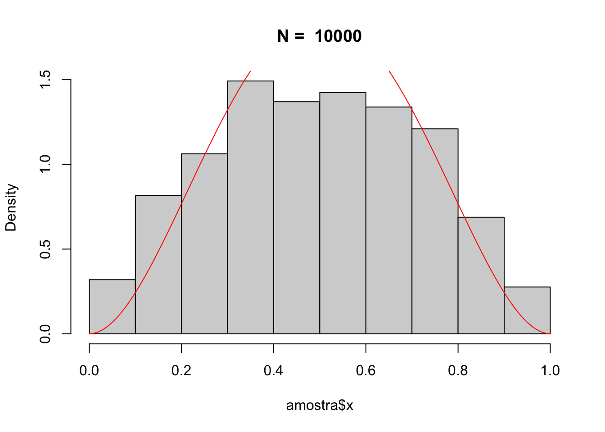
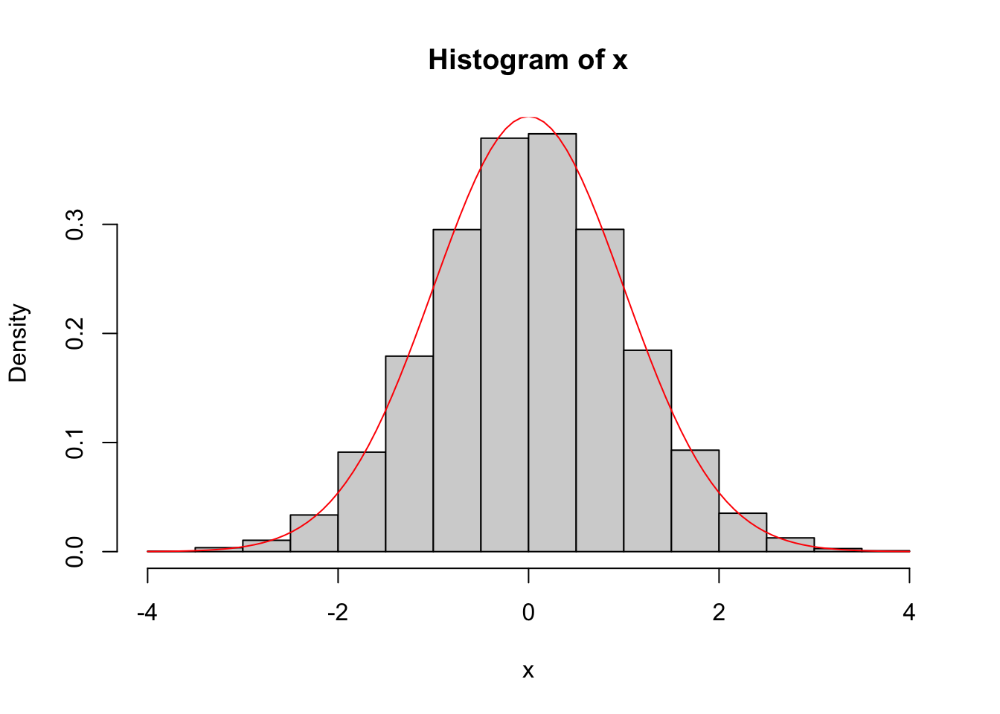

#Criar uma funcão para Gerador RANDU em R
randu <- function(n, seed = 1, modulo = 2^31) {
x <- seed
u <- numeric(n)
for (i in 1:n) {
x <- (65539 * x) %% modulo
u[i] <- x / modulo
}
return(u)
}
randu(100) |> hist()
#Criar uma funcão para Gerador RANDU em R
randu <- function(n, seed = 1, modulo = 2^31) {
x <- seed
u <- numeric(n)
for (i in 1:n) {
x <- (65539 * x) %% modulo
u[i] <- x / modulo
}
return(u)
}
randu(100) |> hist()
gerador_seq <- function(n){
x <- numeric(n)
x[1] <- 23
x[2] <- 66
for (i in 3:n) {
x[i] <- (3 * x[i - 1] + 5 * x[i - 2]) %% 100
}
u <- x / 100
list(xn = x, un = u)
}n <- 14
resultado <- gerador_seq(n)
resultado$xn [1] 23 66 13 69 72 61 43 34 17 21 48 49 87 6Usando a função inversa temos:
F_x <- function() {
repeat {
u <- runif(1)
if (u <= 1/3) {
return(1)
} else {
return(2)
}
}
}N = 100
n = 100
resultado <- purrr::map_dbl(1:n, ~ F_x())
resultado |> janitor::tabyl() resultado n percent
1 37 0.37
2 63 0.63N = 1000
n = 1000
resultado <- purrr::map_dbl(1:n, ~ F_x())
resultado |> janitor::tabyl() resultado n percent
1 334 0.334
2 666 0.666N = 10000
n = 10000
resultado <- purrr::map_dbl(1:n, ~ F_x())
resultado |> janitor::tabyl() resultado n percent
1 3346 0.3346
2 6654 0.6654a) \(1 - U => U(0,1)\)
Aplicando a transformação temos \[ f(x) \]
Se \(x < a\), temos: \[ f(x) \]
Se \(x >= a\), temos: \[ f(x) \]
Assim: \[ F_x(x)^-1 = \]
dist_laplace <- function(n = 1, a = 0, b = 1){
U = runif(n)
X <- ifelse(U <= 0.5,
a + b * log(2 * U),
a - b * log(2 * (1 - U)))
return(X)
}#install.packages('VGAM')n = 100
a = 0
b = 1
x = dist_laplace(n = n, a = a, b = b)
hist(x, probability = TRUE)
curve(VGAM::dlaplace(x = x, location = a, scale = b), add = TRUE)
\[ \omega = (derrota, empate, triunfo) \]
F_x <- function(n) {
resultado <- character(n)
for (i in 1:n) {
u <- runif(1)
resultado[i] <- dplyr::case_when(
u <= .2 ~ 'Derrota',
u <= .5 ~ 'Empate',
TRUE ~ 'Triunfo'
)
}
return(resultado)
}
F_x(n=19) |> janitor::tabyl() |> print() F_x(n = 19) n percent
Derrota 3 0.1578947
Empate 9 0.4736842
Triunfo 7 0.3684211simular_campanha <- function(n_camp){
resultado_camp <- numeric(n_camp)
for(i in 1:n_camp) {
resultado_camp[i] <- as.numeric(sum(table(F_x(n = 19))*c(0, 1, 3)))
}
return(resultado_camp)
}
resultados = simular_campanha(n_camp = 15)
summary(resultados) |> print() Min. 1st Qu. Median Mean 3rd Qu. Max.
27.00 31.00 36.00 36.27 40.00 50.00 resultados |> boxplot()
\[ F(x) = {x^2 + x \over 2}, 0 <= x <= 1 \]
Metodo da inversa
metodo_invesa <- function(n) {
u <- runif(n)
x <- (-1 + sqrt(1 + 8 * u)) / 2
return(x)
}
n <- 10000
resultados <- metodo_invesa(n)
dF <- deriv(~ (x^2 + x)/2, "x")
hist(resultados, breaks = 30, probability = TRUE,
main = "Distribuição dos valores gerados", col = "lightblue")
curve((2 * x + 1)/2, from = 0, to = 1, add = TRUE, col = "red", lwd = 2)
Metodo da rejição
# Função de X
f_x <- function(x) {return(x)}
metodo_rejeicao <- function(n) {
amostras <- c()
while (length(amostras) < n) {
x <- runif(1, min = 0, max = 1)
u <- runif(1, min = 0, max = 1)
if (u <= f_x(x)) {
amostras <- c(amostras, x)
}
}
return(amostras)
}
n <- 10000
resultados <- metodo_rejeicao(n)
hist(resultados, breaks = 30, probability = TRUE,
main = "Distribuição dos valores gerados (Método da Rejeição)", col = "lightblue")
curve((2 * x + 1)/2, from = 0, to = 1, add = TRUE, col = "red", lwd = 2)
Comparar os resultados
n <- 1000
amostra = runif(n, min = 0, max = 1)
F_x <- function(x) {return((x^2 + x) / 2)}
resultado_real = purrr::map_dbl(amostra, F_x)
resultado_metodo_inversa <- metodo_invesa(n)
resultado_metodo_rejeicao <- metodo_rejeicao(n)
mae_inversa <- mean(abs(resultado_real - resultado_metodo_inversa))
mae_rejeicao <- mean(abs(resultado_real - resultado_metodo_rejeicao))
cat("Para n =",n, "Temos: Erro Médio Absoluto (Inversa):", mae_inversa, "\n")Para n = 1000 Temos: Erro Médio Absoluto (Inversa): 0.3690676 cat("Para n =",n, "Temos: Erro Médio Absoluto (Rejeição):", mae_rejeicao, "\n")Para n = 1000 Temos: Erro Médio Absoluto (Rejeição): 0.3780836 \(f(x) = 30(x^2 - 2x^3 + x^4), onde 0 <= x <= 1\)
Olhando o gráfico da f(x), um bom candidato seria \(x - x^2\)
Usando o metodo da rejeição, temos:
f_x <- function(x) {x - x^2}
metodo_rejeicao <- function() {
repeat {
x <- runif(n = 1, min = 0, max = 1)
u <- runif(n = 1, min = 0, max = 1)
if (u <= f_x(x)) {
return(list(x = x, contagem = "Aceito"))
} else {
return(list(x = NA, contagem = "Rejeito"))
}
}
}
n = 10000
amostra <- purrr::map_df(1:n, ~metodo_rejeicao())
amostra$contagem |>
table() |>
prop.table() |>
print()
Aceito Rejeito
0.1628 0.8372 amostra$x |> hist(probability = TRUE, main = paste("N = ", n))
curve(30*(x^2 - 2*x^3 + x^4), from = 0, to = 1, col = "red", lwd = 1, add = TRUE)
Usando o metodo da inversa.
Encontrar a acumulada de Y, dado que \(Y = X^{(1/a)}\)
\[F_y(y) = P(Y <= y) = P(X^{(1/a)} = y)\]
\[P({(X{1/a}})a <= y^a) <=> P(X <= y^a)\]
Sabendo que \(F_x(x) = 1 - e^{-x}\), temos:
\(F_Y(y) = 1 - e^{-(y^a)}\)
Encontar a inversa:
\(U = 1 - e^{-(y^a)}\)
\(U - 1= e^{-(y^a)} [-1]\)
\(1 - U = e^{-(y^a)} [log]\)
\(log(1 - U) = -y^a [-1]\)
\(y^a = -log(1 - U)\)
\(y = {(-log(1 - u))}^{1/a}\)
metodo_invesa <- function(n, a) {
u <- runif(n)
x <- (-1 - log(1 - u))^(1/a)
return(x)
}
n <- 10000
a <- 2
x <- metodo_invesa(n, a)
hist(x, breaks = 30, probability = TRUE,
main = "Distribuição dos valores gerados", col = "lightblue")
curve(dweibull(x, shape = a, scale = 1), from = 0, add = TRUE, col = 'red')
Prove que: > Se \(U_1\) e \(U_2\) são iid, então \(X_1\) e \(X_2\) também são
1[1] 1# Box-Muller: exp(1)
dist.normal.exp <- function(n) {
gerar_valor <- function() {
repeat {
y1 <- rexp(1, rate = 1)
y2 <- rexp(1, rate = 1)
if (y2 > ((1 - y1)^2) / 2) {
u <- runif(1, min = 0, max = 1)
return(ifelse(u <= 0.5, y1, -y1))
}
}
}
x <- purrr::map_dbl(1:n, ~ gerar_valor())
return(x)
}# Box-Muller: uniforme(1)
dist.normal.u <- function(n) {
gerar_valor <- function() {
repeat {
y1 <- 2 * runif(1) - 1
y2 <- 2 * runif(1) - 1
y3 <- y1^2 + y2^2
if (y3 < 1) {
z1 <- y1 * sqrt(-2 * log(y3) / y3)
return(z1)
}
}
}
x <- purrr::map_dbl(1:n, ~ gerar_valor())
return(x)
}n <- 10000
inicio_M1 <- Sys.time()
x <- dist.normal.exp(n)
hist(x, probability = TRUE)
curve(dnorm(x), add = TRUE, col = 'red')
fim_M1 <- Sys.time()
print(paste0("Box-Muller: exponecial: ", fim_M1 - inicio_M1,"s"))[1] "Box-Muller: exponecial: 0.036963939666748s"n <- 10000
inicio_M1 <- Sys.time()
x <- dist.normal.u(n)
hist(x, probability = TRUE)
curve(dnorm(x), add = TRUE, col = 'red')
fim_M1 <- Sys.time()
print(paste0("Box-Muller: Uniforme: ", fim_M1 - inicio_M1,"s"))[1] "Box-Muller: Uniforme: 0.0254678726196289s"> O metodo visto em sala de aula mostrou ser mais eficiente.
#install.packages("corpcor")gerar_mult_normal <- function(N, Mi, Sigma) {
tryCatch({
if (!corpcor::is.positive.definite(Sigma)) {
stop("A matriz Sigma não é positiva definida")
}
A <- t(chol(Sigma))
Z <- matrix(rnorm(n * length(mu)), ncol = length(mu))
X <- Z %*% A + matrix(rep(mu, each = n), nrow = n, byrow = TRUE)
return(X)
}, error = function(e) {
message("Erro: ", e$message)
return(NULL)
})
}
mi=c(1,2,3)
s <- matrix(c(3, -2, 1,-2, 5, 3,1, 3, 4),
nrow = 3,
byrow = TRUE)
amostra <- gerar_mult_normal(100, mi, s)Erro: A matriz Sigma não é positiva definidaprint(amostra)NULL